sector51 supernovae (26 total)
Each figure has three panels. The top panel shows the transient light curve, the middle panel shows the local background (estimated in an annulus), and the bottom panel shows a "background-model corrected" light curve. Details about the background model are in the README.
The vertical red line marks the time of discovery reported to TNS. Other useful metadata from TNS is in the figure title.
Note that the top and bottom panel are in magnitudes, while the middle panel is in differential flux units. The magnitudes are calibrated to the flux in the reference image used for image subtraction. Thus, flux from the host galaxy is included in these magnitudes.
3-sigma upper limits are plotted as triangles with no errorbars. A typical limiting magnitude is 19.6 in 30 minutes or 18.4 in 200 seconds (for low backgrounds).
The links allow you to download the light curve data as a text file.
More details in the README.
2022jdv
 2022iqp
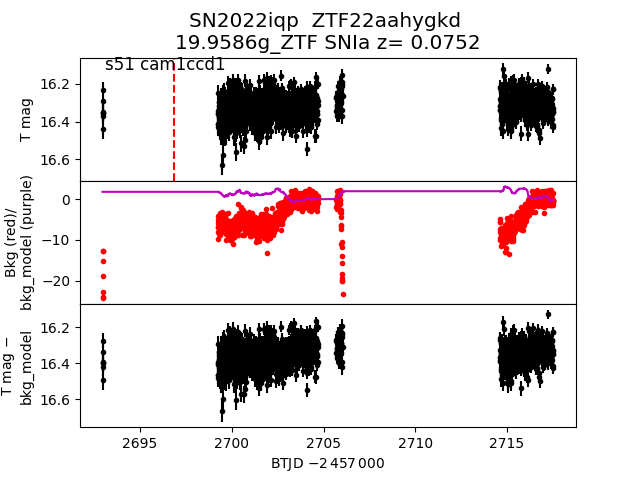
2022jwy
2022iqp
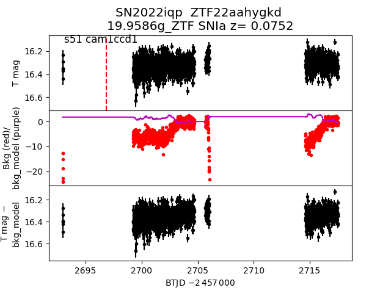
2022jwy
 2022ies
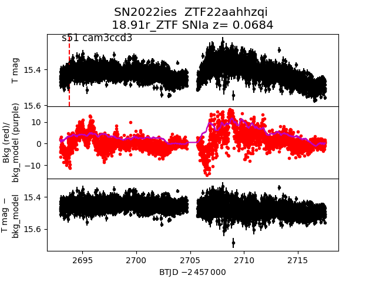
2022jpi
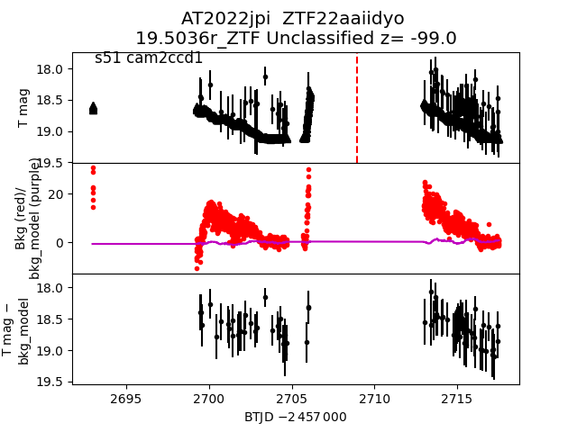
2022jdf
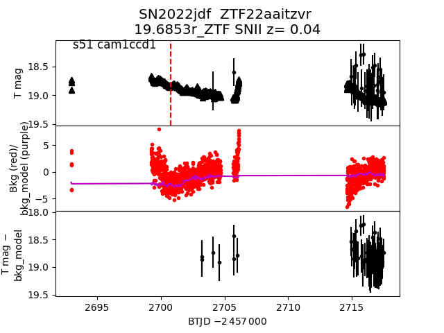
2022ilq
2022ies
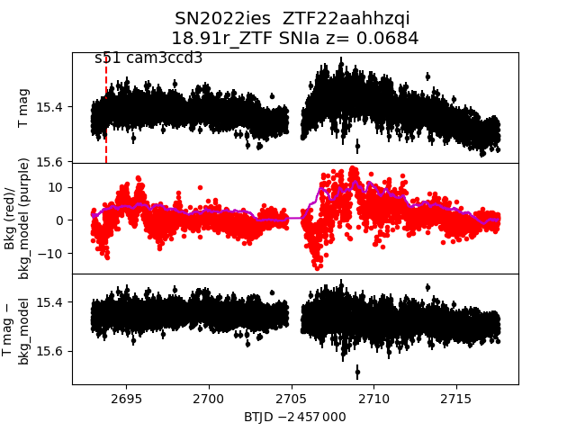
2022jpi
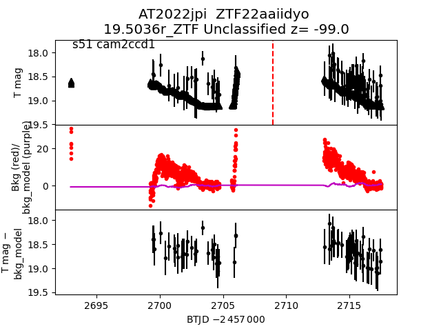
2022jdf
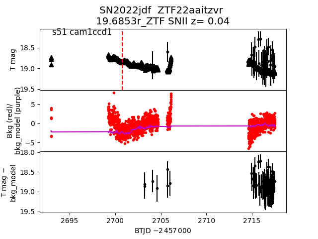
2022ilq
 2022isb
2022isb
 2022jut
2022jut
 2022jps
2022jps
 2022jii
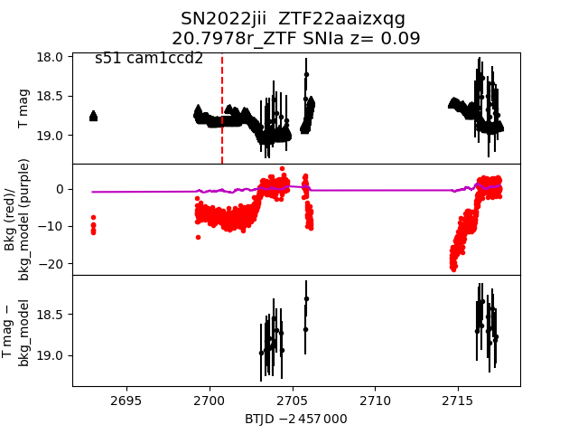
2022jwl
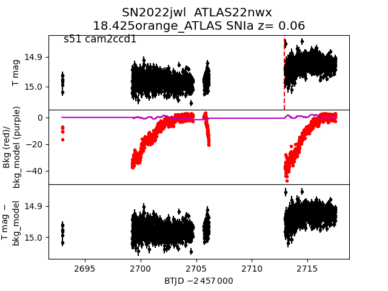
2022jqg
2022jii
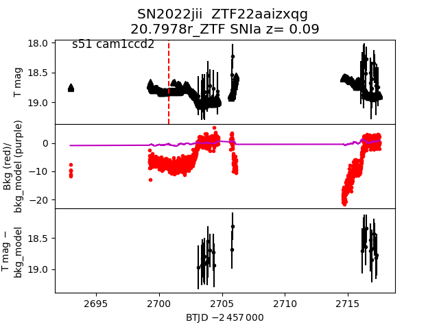
2022jwl
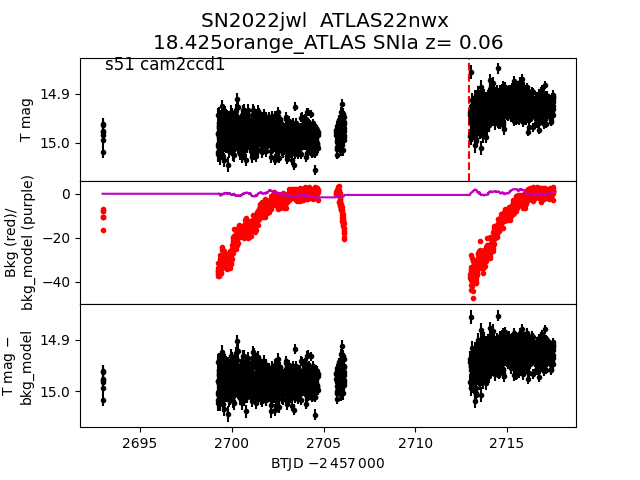
2022jqg
 2022kad
2022kad
 2022jnx
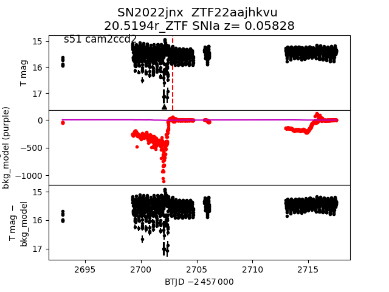
2022jhq
2022jnx
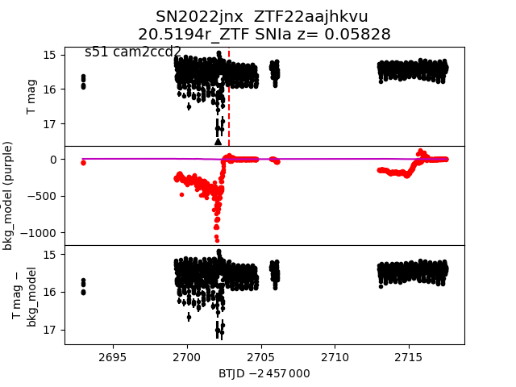
2022jhq
 2022jpn
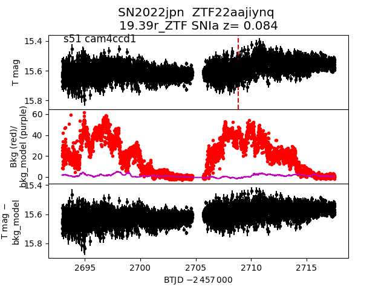
2022jbg
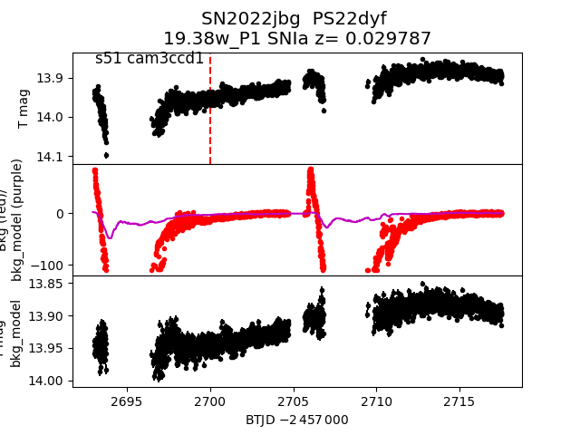
2022jsp
2022jpn
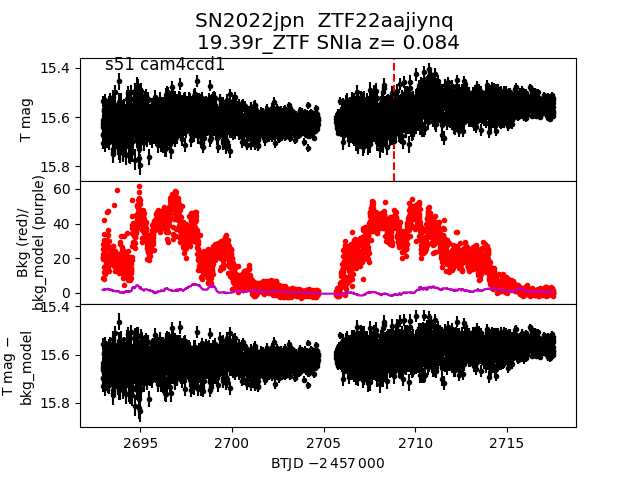
2022jbg
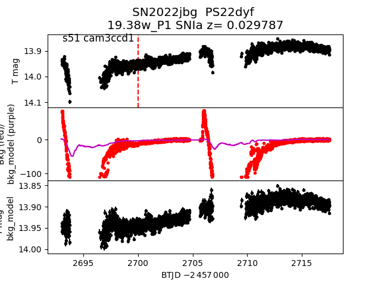
2022jsp
 2022ikc
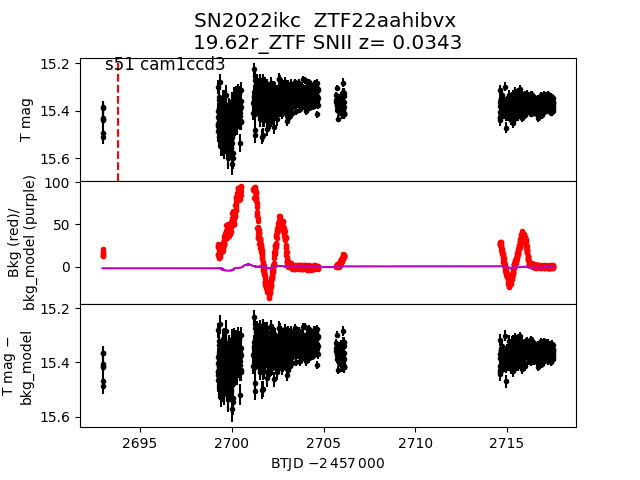
2022jso
2022ikc
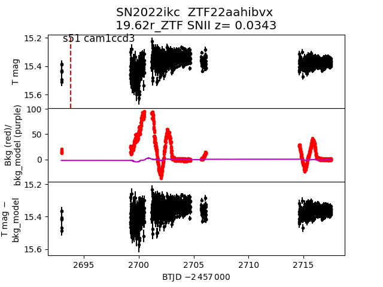
2022jso
 2022iid
2022iid
 2022ina
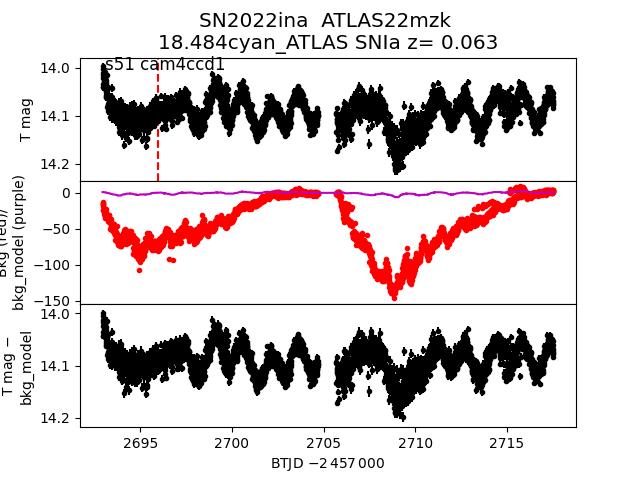
2022jnr
2022ina
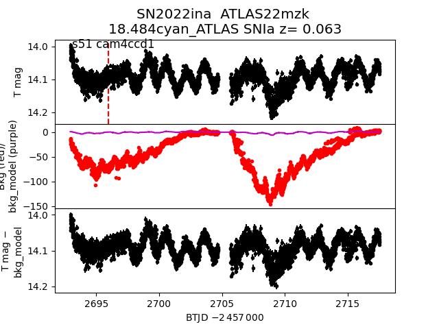
2022jnr
 2022jwh
2022jwh
 2022jnm
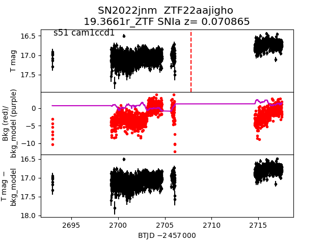
2022jnm
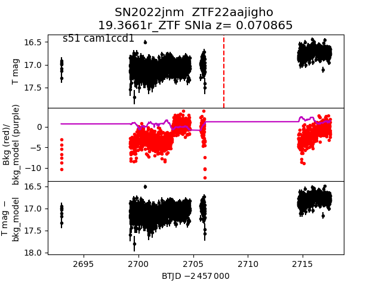